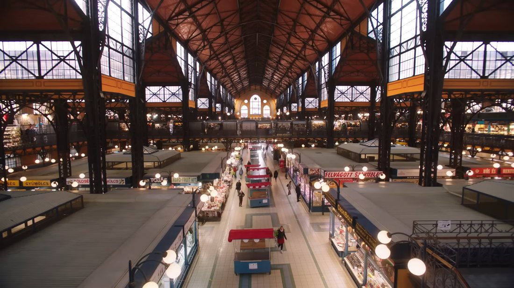
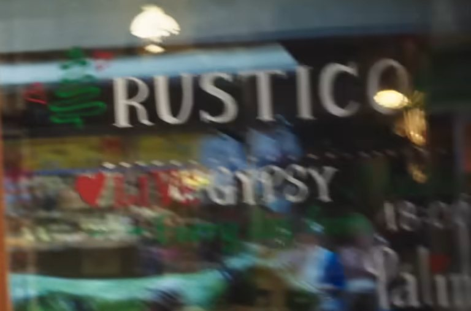
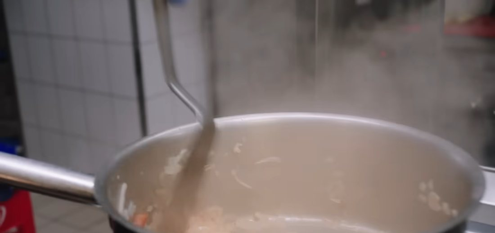
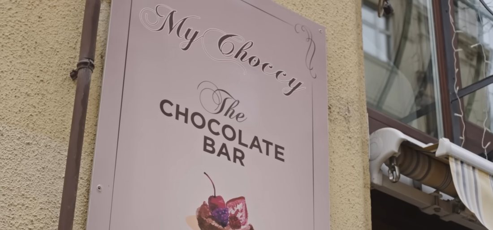
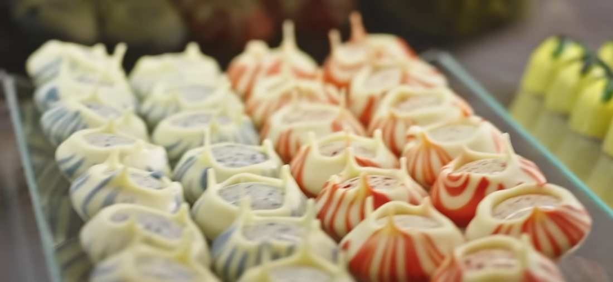
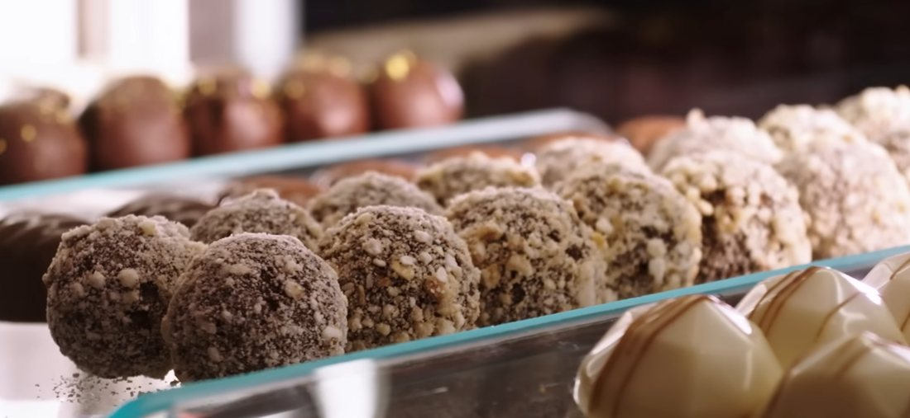
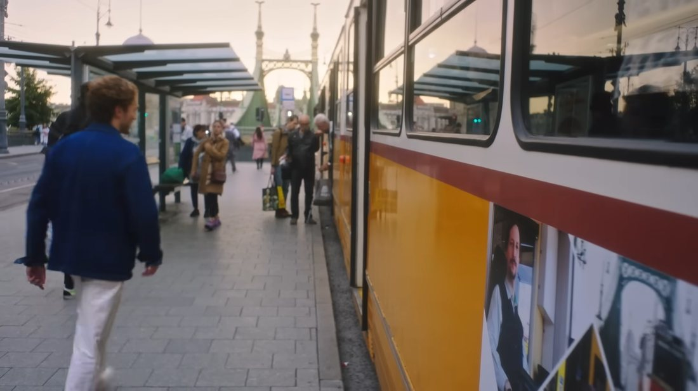
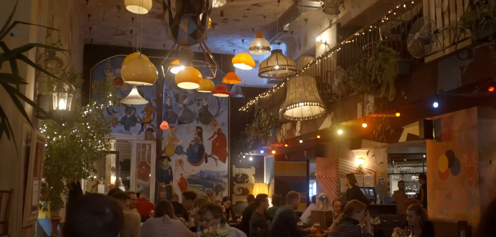
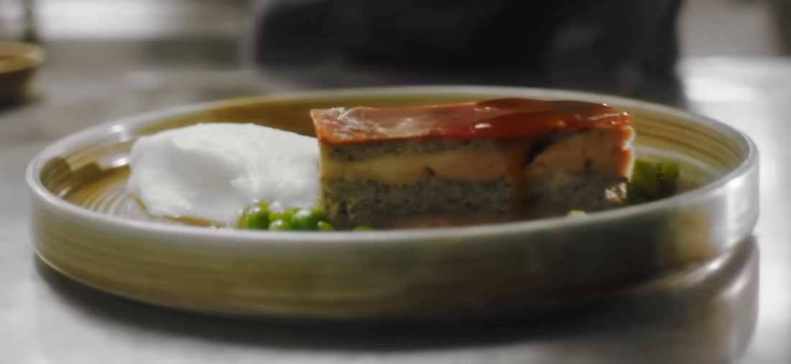

一支 11 分钟的美食指南，把布达佩斯的三站串成一条线：从中央市场问起，到 Rustico 吃传统炖菜，让巧克力店替你挑 5 种，再坐有轨电车去 Zator。字幕没给人均、门牌号和营业时间，下面只写能照做的顺序与点法。

适合谁：愿意按地点顺序走、愿意把甜点选择交给店家的人。视频对三站的描述分别落在“传统食谱 + 本地食材”00:02:3500:03:53、“当地制作巧克力”00:06:27和“文化空间改造成餐厅”00:10:06。
不适合谁：需要门牌号、菜单价格和营业时间的人。字幕里这三样都没说，别按这篇稿子直接导航。
视频里没说：三站的具体地址、人均消费、预约方式、公共交通票种和全程耗时。
开场字幕把匈牙利菜概括为“用简单食材做的丰盛菜肴”，并点名辣椒粉炖牛肉和街头小吃00:00:0500:00:13。先记住这两个关键词，后面点菜会更快。
视频里的本地建议很直接：先去中央市场逛逛，那里能找到一些很棒的餐厅00:01:2700:01:33。你可以把市场当成问路和找店的第一站，而不是直接奔向某一家店。
第一天的节奏也被交代了：深夜从伦敦飞抵、先去酒店，第二天早上开始探索当地美食美酒00:01:0200:01:14。所以别把三站塞进抵达当晚。
| 站点 | 字幕里能确认的 | 你照着做 |
|---|---|---|
| 中央市场 | 本地人推荐先逛这里，说能找到很棒的餐厅00:01:2700:01:33 | 先到市场，把后面的店问清楚再走 |
| Rustico | 家族经营，灵感来自匈牙利乡村的口味和装饰00:02:0100:02:03；厨房食材本地采购、与小农户合作00:03:5300:03:59 | 先问食材来源，再点炖牛肉或鸡肉炖菜 |
| 巧克力店 | 店家一次挑 5 种00:05:10；巧克力都在当地制作00:06:27 | 让店家挑，先问清哪几款含酒精 |
| Zator | 曾作为零售空间经营 40 年00:09:10，10 年前重新开张00:10:00 | 留时间看室内，再看菜单 |
Rustico 的卖点在字幕里写得很清楚：家族经营、灵感来自匈牙利乡村口味和装饰00:02:0100:02:03。门面上的店名可以直接对上画面里的招牌。

创始人说炖牛肉食谱是从妈妈那里传下来的00:02:4800:02:52，并称它是很多匈牙利菜的基础00:02:58。视频里先尝的是厨房里盛的一碗，评价是“稍微有点辣”00:03:0400:03:15。

坐下来点正餐时，视频把鸡肉炖菜称作“普通乡村食谱”，并明确说它不是新式菜，也不是融合菜00:03:3800:03:45。想照着点，就按“传统做法”预期，不要按创意菜预期。
可持续性这一条也能问：厨房食材为本地采购，店方与小农户、农贸市场合作00:03:5300:04:06。
吃完炖牛肉，字幕直接转到甜点：匈牙利有悠久的巧克力制作历史，这家店由 Vivian 和她的父亲经营，产品获过奖00:04:4200:04:54。

最省事的点法是直接说“我听说过你们的巧克力，想尝尝”，店家会替你挑 5 种00:05:0500:05:10。你只需要追加一个问题：哪几款含酒精？

字幕里能追到的口味有几类。朗姆酒口味被说成“酒味最浓”的一款00:05:2100:05:23；帕林卡口味是获奖作品之一，咬开能看到三层：黑巧克力加帕林卡、杏仁糖金币、酸樱桃00:06:3300:06:4000:06:47。后面还有辣椒花生黑巧和烤洋葱口味00:06:5800:07:06">00:07:06。

别小看洋葱款：店方说这类巧克力做一个大约要一个月00:07:2800:07:35，灵感来自烤辣椒、香醋和一些通常不搭巧克力的香料00:07:2000:07:25">00:07:25。要不要试，见第 8 节。
字幕给出的转场是：从下一站坐有轨电车前往布达一侧，并说两城在 19 世纪末合并00:08:3100:08:35。机翻把两个区名写成了 “PES / Budhus”，本文按字幕原名保留，不自行校正。

Zator 所在的街区字幕形容为绿树成荫的街道00:08:46。餐厅自身的履历也讲得很细：20 世纪初曾吸引作家、画家和艺术家，是当时的创意热点00:08:5100:08:55；作为零售空间经营 40 年后，换了新的老板和主厨，重新做起来00:09:1000:09:18。
主厨说，上一轮关门后这里空置了几十年，直到 10 年前才有机会重新开张；重新开业的目标是让空间重新有文化气息，再请回艺术家和文化人士00:09:5700:10:0000:10:06。

主厨在介绍菜单时说，室内很舒适，同时与真正的专家合作；接着补了一句“艺术无处不在，餐盘上也会有艺术”00:10:1900:10:25">00:10:2500:10:34。字幕里给的菜品信息就到这里，具体菜名没说。

菜单的结构倒是可问：这里既有顶级美食，也有更简单的日常家常菜，因为咖啡馆得能同时提供精致菜肴00:10:4100:10:52。同行者最后的评价是“食物非常精致，就像今天尝试的其他一切一样”00:11:0500:11:09。
| 坑 | 怎么避 |
|---|---|
| 按这篇稿子直接导航 | 视频没给三站地址、电话、营业时间和人均，出发前自己查 |
| 把机翻区名当成正式地名 | 字幕写成 “PES / Budhus”，本文保留原文，不据此查地图 |
| 把炖牛肉当“创新菜”预期 | 鸡肉炖菜被明确说是普通乡村食谱，不是新式菜或融合菜00:03:3800:03:45 |
| 巧克力一次点太多酒味款 | 先问哪款含酒精；有一款被说成“酒味最浓”00:05:2100:05:23 |
| 把洋葱巧克力当大众口味 | 店方自己说“不是每个人都喜欢”00:07:43">00:07:4300:07:46 |
| 把“精致”当具体菜品 | 字幕没给 Zator 的菜名、价格，只说菜单兼有高端与家常00:10:4100:10:56 |
| 说法 | 视频里怎么说 | 本文处理 |
|---|---|---|
| 洋葱味巧克力 | 店方说做一款约一个月00:07:28；主持人尝后说“想想就觉得恶心”，并承认自己加了好多洋葱00:07:3700:07:43 | 口味评价是主观的；可查的是“洋葱口味存在”和“制作约一个月”，不下好不好吃的结论 |
| “80% 的酒精度” | 字幕在试吃含酒精巧克力时出现这一数字00:06:1100:06:16 | 这是字幕里的说法，未给出产品标签或检测依据；按原话记录，不当作可核对参数 |
| “屡获殊荣” | 介绍巧克力店时这样形容00:04:54，后来又说帕林卡口味是获奖作品之一00:06:33 | 奖项名称、年份和颁发方字幕没说，只写“视频里如此描述” |